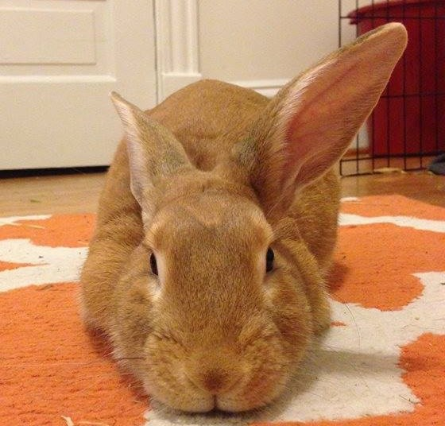
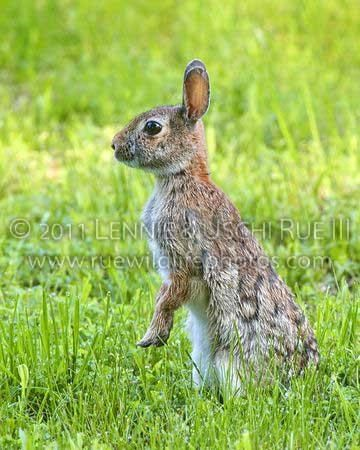
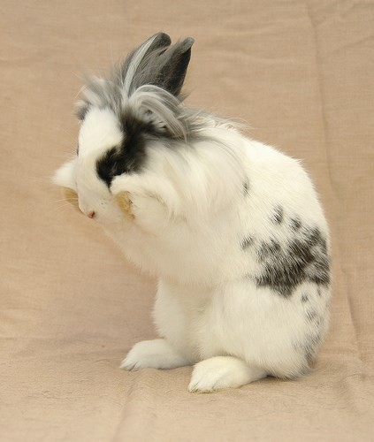
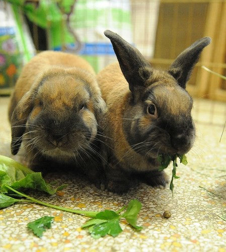
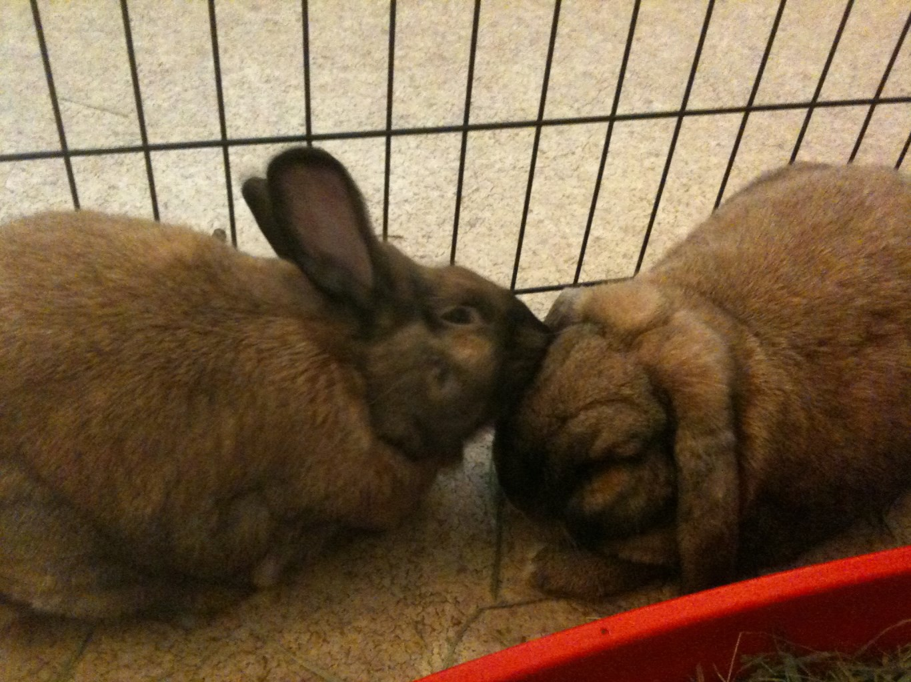
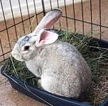

Taxonomy
Leporidae
Luh-POUR-uh-dee (Latin) — the rabbit & hare family
Leporidae is the biological family that encompasses all rabbits and hares. From the smallest domestic lop to the snowshoe hare, these animals share a remarkable set of characteristics — large hind legs, long ears, and a diet of grasses and greens.






The pages in this guide cover three major groups you'll encounter in North America:
- Domestic ("House") Rabbits — kept as indoor pets, many breeds, lifespan 8+ years
- Cottontails (Garden Rabbits) — wild animals, a distinct species, lifespan under 3 years
- Meat Breeds — large domestics like New Zealand Whites, now frequently rescued and kept as pets